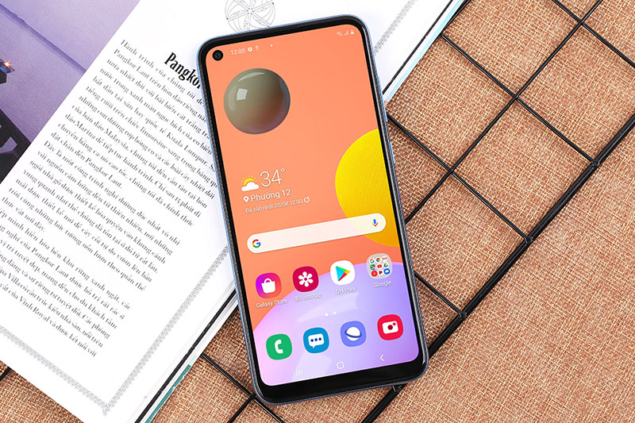
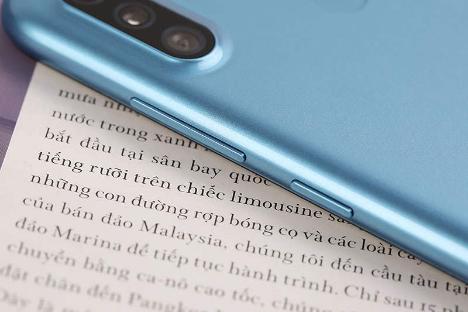
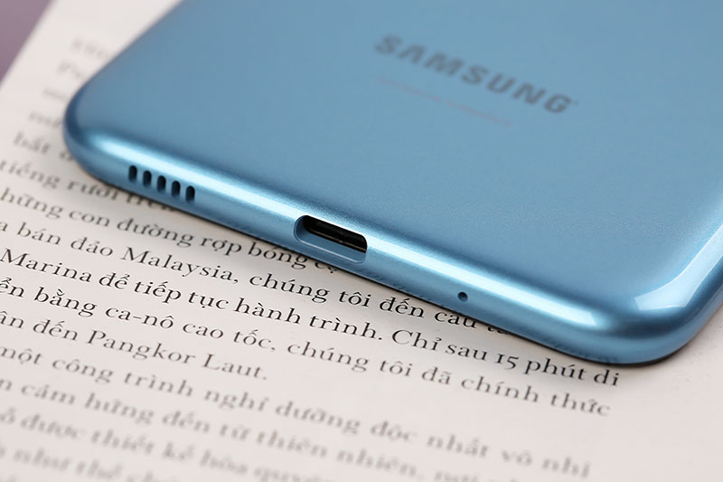

Đặc điểm nổi bật của Samsung Galaxy A11
Bộ sản phẩm chuẩn: Hộp, Sạc, Sách hướng dẫn, Cáp, Cây lấy sim
Samsung Galaxy A11 với thiết kế màn hình Infinity-O siêu tràn viền, bộ ba camera ấn tượng, đi kèm với mức giá phải chăng hứa hẹn sẽ tạo nên cơn sốt trên thị trường điện thoại giá rẻ.
Màn hình Infinity-O siêu tràn viền 6.4 inch
Vì là smartphone giá rẻ, Galaxy A11 không dùng màn hình AMOLED thường thấy của Samsung, thay vào đó là màn hình PLS TFT độ phân giải HD+. Điểm cộng cho màn hình của máy là kích thước đến 6.4 inch rộng rãi, phù hợp nhiều nhu cầu sử dụng khác nhau.

Màn hình trên Galaxy A11 sẽ phù hợp cho việc sử dụng cho mục đích xem phim, chơi game thông thường và không đòi hỏi yêu cầu quá cao về đồ họa.

Mặc dù nằm ở phân khúc giá rẻ máy vẫn sở hữu thiết kế Infinity-O thời thượng với camera trước dạng đục lỗ của các dòng flagship cao cấp như Galaxy S20, Galaxy Note 10,…

Viền dưới của màn hình cũng còn khá dày, nhưng là một smartphone giá rẻ nên điều này hoàn toàn chấp nhận được. Nói về ưu điểm thì phần viền dày cũng góp phần hạn chế vô tình chạm vào màn hình.
Lưu giữ khoảnh khắc thường ngày với bộ 3 camera đa dụng
Về camera, Galaxy A11 được trang bị 3 camera mặt sau bao gồm: 13 MP + 5 MP + 2 MP, trong khi mặt trước là camera selfie với thiết kế đục lỗ độ phân giải 8 MP để người dùng chụp ảnh “tự sướng” và gọi video call.
Bộ 3 camera sau của máy vẫn hỗ trợ tốt các tính năng thời thượng để người dùng có những bức ảnh “sống ảo” đẹp mắt như: nhận diện khuôn mặt, HDR, chụp toàn cảnh (Panorama), Làm đẹp (Beautify) và hỗ trợ quay phim Full HD 1080p...
Ảnh chụp từ Camera sau của Samsung Galaxy A11
Hình ảnh được chụp bằng Samsung Galaxy A11 có chất lượng tốt và độ chi tiết cao, bạn có thể sử dụng thêm tính năng độ chỉnh sửa hình ảnh ngay sau khi chụp, mang tới những tấm hình với nhiều hiệu ứng độc đáo và thú vị.
 Sử dụng ổn định hàng ngày
Sử dụng ổn định hàng ngày
Galaxy A11 được trang bị chip Snapdragon 450 8 nhân tốc độ 1.8 GHz, đi kèm với dung lượng RAM 3 GB bộ nhớ trong 32 GB, có thể mở rộng bằng thẻ nhớ MicroSD lên đến 512 GB.
Với cấu hình như trên, các nhu cầu cơ bản như lướt web, xem phim, chơi các game nhẹ nhàng như Candy Crush, Clash of Clans... máy đều có thể đáp ứng tốt.
A11 sẽ được chạy trên hệ điều hành Android 10 mới nhất tùy biến với giao diện One UI 2.0 của Samsung với thiết kế tinh gọn, giao diện nhẹ nhàng cho trải nghiệm đơn giản, mượt mà hơn.

Ngoài ra, Galaxy A11 còn được Samsung trang bị viên pin có dung lượng cao 4.000 mAh đủ để bạn sử dụng liên tục trong cả ngày dài, bạn cũng có thể sử dụng thêm tính năng siêu tiết kiệm pin để mang tới thời gian sử dụng tối đa.

Bên cạnh đó máy còn được hỗ trợ công nghệ sạc nhanh 15 W giúp bạn có thể nhanh chóng nạp đầy năng lượng cho máy để những trải nghiệm giải trí trên Samsung A11 không bị gián đoạn.
"Samsung A11 sở hữu những nâng cấp đáng giá về màn hình, viên pin và camera, vượt trội hơn hẳn so với tiền nhiệm của nó. Ngoài ra, thiết kế vẻ ngoài máy cũng được Samsung “thổi một làn gió mới” tạo điểm nhấn ấn tượng và cuốn hút người dùng. Với mức giá rẻ, lại dễ dàng đáp ứng mọi nhu cầu giải trí, học tập, liên hệ của người dùng, đây là món hời công nghệ bạn không nên bỏ lỡ thời điểm này."
Chuyên gia Anh Khoa nhận xét